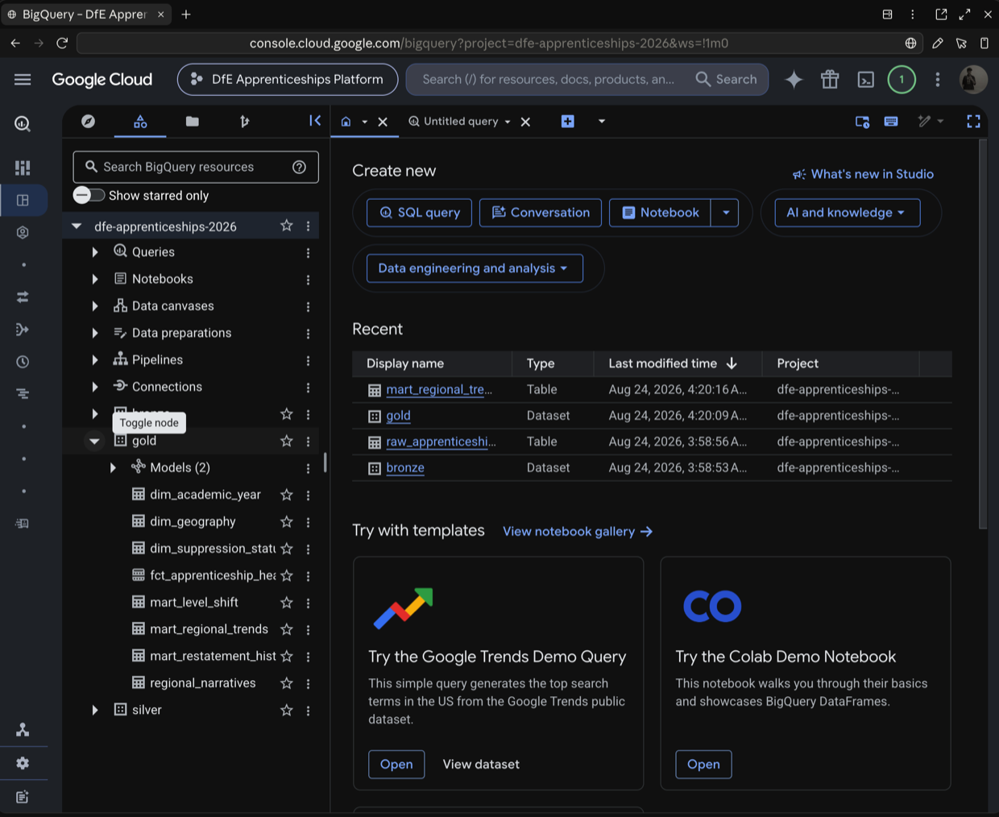
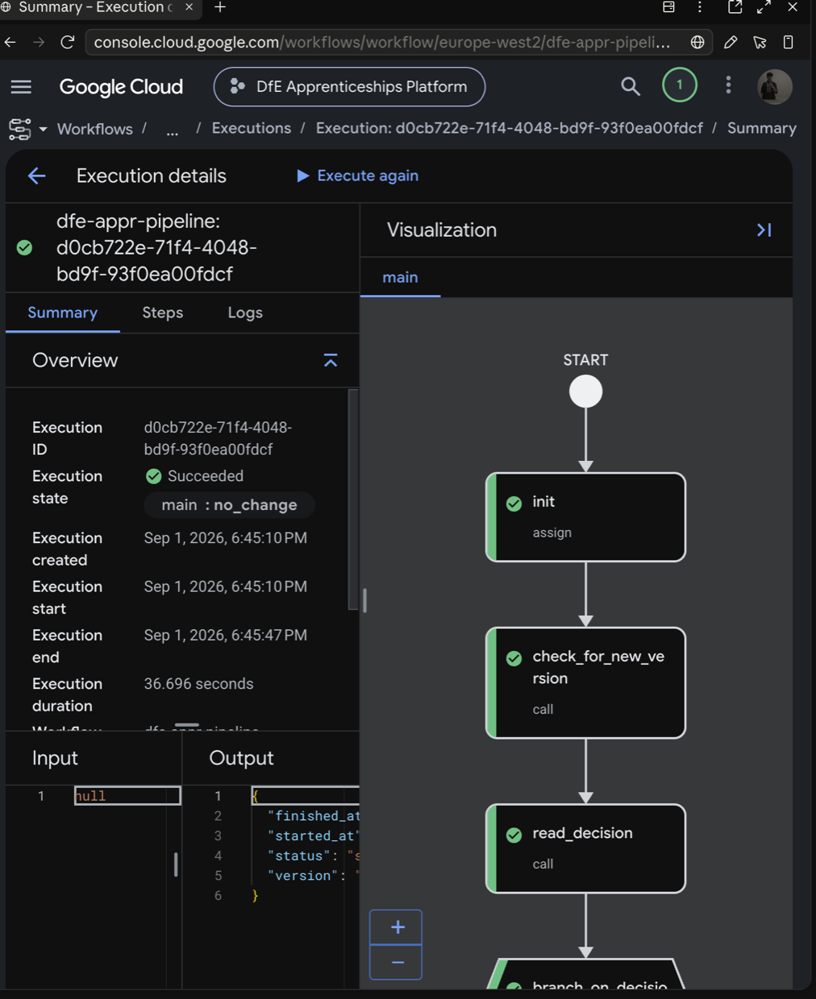
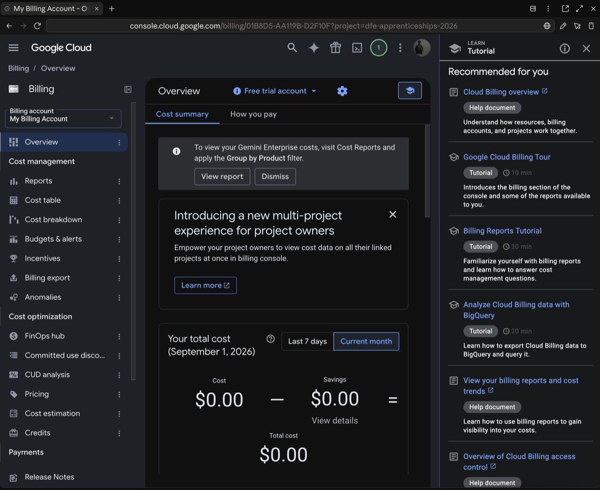

<title>The 24x Answer</title>
<link rel="stylesheet" href="https://fonts.googleapis.com/css2?family=IBM+Plex+Mono:wght@400;500&family=IBM+Plex+Sans:wght@300;400;500&display=swap">
<style>
  :root {
    color-scheme: light;
    --bg:     #ffffff;
    --ink:    #0a0a0a;
    --ink-2:  #3d3d3d;
    --muted:  #8a8a8a;
    --rule:   #e6e6e6;
    --wrong:  #c62828;
    --right:  #17754f;
    --hold:   #9a6b00;
  }
  @media (prefers-color-scheme: dark) {
    :root:not([data-theme="light"]) {
      color-scheme: dark;
      --bg: #0a0a0a; --ink: #f5f5f5; --ink-2: #c4c4c4; --muted: #7e7e7e;
      --rule: #242424; --wrong: #ff7565; --right: #4ec99a; --hold: #d9a441;
    }
  }
  :root[data-theme="dark"] {
    color-scheme: dark;
    --bg: #0a0a0a; --ink: #f5f5f5; --ink-2: #c4c4c4; --muted: #7e7e7e;
    --rule: #242424; --wrong: #ff7565; --right: #4ec99a; --hold: #d9a441;
  }

  * { box-sizing: border-box; }
  body {
    background: var(--bg); color: var(--ink); margin: 0;
    font-family: "IBM Plex Sans", ui-sans-serif, -apple-system, "Segoe UI", sans-serif;
    font-weight: 400; -webkit-font-smoothing: antialiased;
  }
  main { max-width: 900px; margin: 0 auto; padding: 0 30px 120px; }
  @media (max-width: 620px) { main { padding: 0 18px 70px; } }

  .slide {
    border-top: 1px solid var(--rule);
    padding: 84px 0 76px; min-height: 460px;
    display: flex; flex-direction: column;
  }
  .slide:first-child { border-top: 0; padding-top: 96px; }
  @media (max-width: 620px) { .slide { padding: 46px 0 40px; min-height: 0; } }

  .n {
    font: 500 11px/1 "IBM Plex Mono", monospace; letter-spacing: .18em;
    color: var(--muted); text-transform: uppercase; margin-bottom: 40px;
  }
  h1 {
    font-weight: 300; font-size: clamp(34px, 5.6vw, 60px); line-height: 1.04;
    letter-spacing: -.03em; margin: 0; text-wrap: balance; max-width: 17ch;
  }
  h2 {
    font-weight: 300; font-size: clamp(26px, 3.8vw, 40px); line-height: 1.1;
    letter-spacing: -.025em; margin: 0 0 30px; text-wrap: balance; max-width: 21ch;
  }
  p { font-size: 16px; line-height: 1.66; color: var(--ink-2); max-width: 56ch; margin: 0 0 16px; font-weight: 300; }
  p.lede { font-size: 19px; color: var(--muted); max-width: 50ch; margin-top: 22px; }
  strong { color: var(--ink); font-weight: 500; }
  .spacer { flex: 1; min-height: 24px; }
  .fine { font-size: 13px; color: var(--muted); }

  /* numbers carry the only colour */
  .figs { display: flex; flex-wrap: wrap; gap: 56px; margin: 8px 0; }
  .fig .v {
    font: 500 clamp(40px,6.4vw,62px)/1 "IBM Plex Mono", monospace;
    letter-spacing: -.05em; font-variant-numeric: tabular-nums; color: var(--ink);
  }
  .fig .v.wrong { color: var(--wrong); }
  .fig .v.right { color: var(--right); }
  .fig .k { font-size: 13px; color: var(--muted); margin-top: 12px; max-width: 20ch; line-height: 1.45; font-weight: 300; }

  .hero {
    font: 500 clamp(78px,15vw,168px)/.86 "IBM Plex Mono", monospace;
    letter-spacing: -.06em; font-variant-numeric: tabular-nums; color: var(--wrong);
  }
  .hero-k { font-size: 15px; color: var(--muted); margin-top: 20px; max-width: 44ch; line-height: 1.5; font-weight: 300; }

  .wrap { overflow-x: auto; }
  table { border-collapse: collapse; width: 100%; font-size: 15px; font-weight: 300; }
  th, td { text-align: right; padding: 13px 16px; border-bottom: 1px solid var(--rule); font-variant-numeric: tabular-nums; }
  th:first-child, td:first-child { text-align: left; padding-left: 0; }
  th:last-child, td:last-child { padding-right: 0; }
  thead th {
    font: 500 11px/1 "IBM Plex Mono", monospace; letter-spacing: .14em;
    text-transform: uppercase; color: var(--muted);
  }
  td.num { font-family: "IBM Plex Mono", monospace; font-weight: 500; }
  td.num.wrong { color: var(--wrong); }
  td.num.right { color: var(--right); }
  code { font-family: "IBM Plex Mono", monospace; font-size: .9em; }

  ul { margin: 0; padding-left: 0; list-style: none; }
  li {
    font-size: 16px; line-height: 1.6; color: var(--ink-2); font-weight: 300;
    max-width: 58ch; padding: 16px 0; border-bottom: 1px solid var(--rule);
  }
  li:first-child { padding-top: 0; }

  /* screenshot slots */
  figure.shot { margin: 34px 0 0; }
  figure.shot img { display: block; width: 100%; border: 1px solid var(--rule); }
  figure.shot figcaption { font: 400 12.5px/1.5 "IBM Plex Sans", sans-serif; color: var(--muted); margin-top: 10px; }
  figure.shot .ph { display: none; }
  figure.shot.empty img { display: none; }
  figure.shot.empty .ph {
    display: block; border: 1px dashed var(--rule); padding: 22px 24px;
  }
  figure.shot.empty .ph b {
    display: block; font: 500 11px/1 "IBM Plex Mono", monospace;
    letter-spacing: .14em; text-transform: uppercase; color: var(--hold); margin-bottom: 9px;
  }
  figure.shot.empty .ph span { font-size: 13.5px; color: var(--ink-2); font-weight: 300; }

  details { border-top: 1px solid var(--rule); }
  summary {
    cursor: pointer; list-style: none; padding: 13px 0;
    font: 500 11px/1 "IBM Plex Mono", monospace; letter-spacing: .14em;
    text-transform: uppercase; color: var(--muted);
  }
  summary::-webkit-details-marker { display: none; }
  summary::before { content: "+  "; }
  details[open] summary::before { content: "−  "; }
  summary:hover { color: var(--ink); }
  details p { font-size: 14.5px; color: var(--muted); max-width: 66ch; padding-bottom: 14px; }
  svg { display: block; max-width: 100%; height: auto; }
</style>

<main>

<section class="slide">
  <div class="n">01</div>
  <h1>The answer this data gives you is 24&times; too big</h1>
  <p class="lede">A production data pipeline on Google Cloud, and the reason it had to exist.</p>
  <div class="spacer"></div>
  <p class="fine">Sai Teja Sunku &middot; data engineering case study</p>
</section>
<details><summary>Notes</summary>
<p>Open on the number, not the architecture. Don't explain the dataset — the audience doesn't need to know what it is. The claim is that a reasonable query on real public data returns something 24 times wrong, and the rest of the deck earns that.</p></details>

<section class="slide">
  <div class="n">02 &middot; Setup</div>
  <h2>I picked a public dataset at random</h2>
  <p>Government statistics. Free API, no key, seventeen tidy columns, fifty thousand rows.
  The kind of thing that looks like an afternoon's work.</p>
  <p>Before writing any pipeline code, I profiled it. <strong>It was wrong in four
  different ways</strong> — none visible in the schema, none of which raise an error.</p>
  <div class="spacer"></div>
  <p class="fine">The dataset is incidental. The failure modes are not — they turn up in most
  real source data.</p>
</section>
<details><summary>Notes</summary>
<p>Say plainly that the dataset was arbitrary and no domain knowledge is needed. What's being shown is the method: profile before you build, then design for what you find.</p></details>

<section class="slide">
  <div class="n">03 &middot; The problem</div>
  <div class="hero">24&times;</div>
  <p class="hero-k">The gap between the obvious query and the truth.</p>
  <div class="wrap" style="margin-top:52px">
    <table>
      <thead><tr><th>Query</th><th>Starts</th></tr></thead>
      <tbody>
        <tr><td>The obvious one — sum every row</td><td class="num wrong">8,484,310</td></tr>
        <tr><td>Only rows at the true detail level</td><td class="num right">353,500</td></tr>
        <tr><td>The publisher's own stated total</td><td class="num right">353,500</td></tr>
      </tbody>
    </table>
  </div>
  <p style="margin-top:26px">Four-fifths of the rows are subtotals mixed in with the detail, so the
  obvious query counts the same records once for every subtotal they sit in.
  <strong>It doesn't error. It's fast. The number looks plausible.</strong></p>
  <figure class="shot">
    
    <div class="ph"><b>Screenshot 1</b><span>BigQuery console — the query returning all three figures.</span></div>
    <figcaption>All three totals, from the same table, in one query.</figcaption>
  </figure>
</section>
<details><summary>Notes</summary>
<p>The silent failure is the point — nothing warns you. This is the argument for modelling the grain explicitly and testing it, rather than trusting that a query which runs is a query which is right.</p></details>

<section class="slide">
  <div class="n">04 &middot; The problem</div>
  <h2>And three more like it</h2>
  <ul>
    <li><strong>The numbers aren't numbers.</strong> Up to a quarter of values are withheld
    for privacy and encoded as text inside the numeric columns. Cast them naively and they
    vanish; fill them with zero and you've invented data.</li>
    <li><strong>History gets rewritten.</strong> Six versions published so far, each quietly
    restating earlier figures. Any analysis pinned to one download is wrong when the next lands.</li>
    <li><strong>Everything is rounded.</strong> Every published figure is a multiple of ten,
    so the parts can never exactly equal the whole.</li>
  </ul>
  <div class="spacer"></div>
  <p class="fine">Each corrupts a result quietly rather than failing loudly.</p>
</section>
<details><summary>Notes</summary>
<p>Keep this brisk — a list, not a deep dive. The audience only needs to accept the data is genuinely hostile before seeing the architecture.</p></details>

<section class="slide">
  <div class="n">05 &middot; The build</div>
  <h2>Architecture</h2>
  <div class="wrap">
  <svg viewBox="0 0 860 168" role="img" aria-label="Scheduler triggers a workflow which checks the source, extracts to raw storage, then transforms into the warehouse">
    <defs><marker id="a" markerWidth="8" markerHeight="8" refX="7" refY="4" orient="auto">
      <path d="M0,1 L7,4 L0,7" fill="none" stroke="currentColor" stroke-width="1.2"/></marker></defs>
    <g font-family="IBM Plex Mono, monospace" font-size="11" fill="currentColor" color="currentColor">
      <g stroke="currentColor" stroke-width="1" fill="none" opacity=".35" marker-end="url(#a)">
        <path d="M84,40 L84,62"/><path d="M150,110 L198,110"/>
        <path d="M310,110 L358,110"/><path d="M470,110 L518,110"/><path d="M630,110 L678,110"/>
      </g>
      <g fill="none" stroke="currentColor" stroke-width="1" opacity=".55">
        <rect x="20" y="14" width="128" height="26"/>
        <rect x="20" y="62" width="130" height="36"/>
        <rect x="198" y="92" width="112" height="36"/>
        <rect x="358" y="92" width="112" height="36"/>
        <rect x="518" y="92" width="112" height="36"/>
        <rect x="678" y="92" width="152" height="36"/>
      </g>
      <text x="84" y="31" text-anchor="middle">Scheduler</text>
      <text x="85" y="78" text-anchor="middle">Workflows</text>
      <text x="85" y="92" text-anchor="middle" opacity=".5">orchestration</text>
      <text x="254" y="108" text-anchor="middle">check source</text>
      <text x="254" y="121" text-anchor="middle" opacity=".5">Cloud Run</text>
      <text x="414" y="108" text-anchor="middle">extract</text>
      <text x="414" y="121" text-anchor="middle" opacity=".5">Cloud Run</text>
      <text x="574" y="108" text-anchor="middle">raw storage</text>
      <text x="574" y="121" text-anchor="middle" opacity=".5">immutable</text>
      <text x="754" y="108" text-anchor="middle">warehouse</text>
      <text x="754" y="121" text-anchor="middle" opacity=".5">transformed, tested</text>
      <text x="20" y="158" opacity=".55">All infrastructure defined as code &middot; rebuilt from nothing in about four minutes</text>
    </g>
  </svg>
  </div>
  <p style="margin-top:32px">Raw data lands untouched and is never modified. Everything downstream
  is rebuilt from it, so any past state can be reproduced exactly.</p>
  <figure class="shot">
    
    <div class="ph"><b>Screenshot 2</b><span>Terminal — <code>terraform plan</code> with the resource-count line.</span></div>
    <figcaption>The whole platform, defined as code and reviewed before it is applied.</figcaption>
  </figure>
</section>
<details><summary>Notes</summary>
<p>Nothing here was clicked into existence in a console. If asked whether it could be rebuilt: yes, in about four minutes — the difference between a demo and something operable.</p></details>

<section class="slide">
  <div class="n">06 &middot; The build</div>
  <h2>Where each problem gets handled</h2>
  <div class="wrap">
    <table>
      <thead><tr><th>Problem</th><th>Handling</th></tr></thead>
      <tbody>
        <tr><td>Subtotals mixed with detail</td><td style="text-align:left">Every row tagged with its level; published views pre-filtered so the wrong answer isn't reachable</td></tr>
        <tr><td>Withheld values as text</td><td style="text-align:left">Split into a number and a reason — never zero-filled</td></tr>
        <tr><td>Rewritten history</td><td style="text-align:left">All six versions kept; the warehouse can answer what was reported at any past point</td></tr>
        <tr><td>Rounding</td><td style="text-align:left">Reconciliation uses a tolerance derived from the rounding, not an invented fudge factor</td></tr>
      </tbody>
    </table>
  </div>
  <figure class="shot">
    
    <div class="ph"><b>Screenshot 4</b><span>BigQuery — the three data layers in the console.</span></div>
    <figcaption>Raw, cleaned, and published layers, each rebuildable from the one before.</figcaption>
  </figure>
</section>
<details><summary>Notes</summary>
<p>The key idea: the correct answer is the easy one. A consumer of the published views can't reproduce the 24× error by accident, because the guardrail lives in the model rather than in the analyst's discipline.</p></details>

<section class="slide">
  <div class="n">07 &middot; The build</div>
  <h2>It only runs when there's work</h2>
  <p>The source updates roughly quarterly. A daily pipeline would redo identical work about
  ninety times per release. Instead a small job checks whether anything changed, and the
  workflow branches on the answer.</p>
  <div class="wrap" style="margin-top:14px">
    <table>
      <thead><tr><th>Verified live</th><th>Outcome</th><th>Time</th></tr></thead>
      <tbody>
        <tr><td>New version available</td><td style="text-align:left">full extract and rebuild</td><td class="num right">2 min</td></tr>
        <tr><td>Nothing changed</td><td style="text-align:left">skipped, no cost</td><td class="num right">37 s</td></tr>
      </tbody>
    </table>
  </div>
  <figure class="shot">
    
    <div class="ph"><b>Screenshot 5</b><span>Workflows — an execution graph, all steps green.</span></div>
    <figcaption>Both paths were run for real, not described.</figcaption>
  </figure>
</section>
<details><summary>Notes</summary>
<p>If the usual orchestrator comes up: it's the more familiar answer but has no free tier, and this workload is quarterly. The same branching is a few lines here for effectively nothing.</p></details>

<section class="slide">
  <div class="n">08 &middot; Rigour</div>
  <h2>The bug the tests caught</h2>
  <p>Twenty-six automated tests run with every build. One earned its place during this project.</p>
  <p>After an unrelated change I re-ran the pipeline to confirm nothing had broken.
  <strong>A test failed.</strong> The date had rolled over between runs, and because raw data is
  never overwritten, the same source version had been stored twice — so every figure was being
  counted twice downstream.</p>
  <div class="figs" style="margin-top:38px">
    <div class="fig"><div class="v wrong">102,596</div><div class="k">rows seen downstream — doubled</div></div>
    <div class="fig"><div class="v right">51,298</div><div class="k">after the fix — correct</div></div>
  </div>
  <p style="margin-top:38px"><strong>The test stopped the run before anything reached the
  published layer.</strong></p>
  <figure class="shot">
    
    <div class="ph"><b>Screenshot 6</b><span>Cloud Run — transform log showing all 26 tests passing.</span></div>
    <figcaption>Models and tests run together, so a failure blocks publication.</figcaption>
  </figure>
</section>
<details><summary>Notes</summary>
<p>The strongest slide — don't rush it. A latent bug that only appears when a date changes, caught automatically, in production, on its first real occurrence. Evidence the tests aren't decorative. It surfaced only because the earlier change was verified rather than assumed.</p></details>

<section class="slide">
  <div class="n">09 &middot; Governance</div>
  <h2>Compliance checked, not claimed</h2>
  <p>A script verifies eighteen controls against the live environment and fails the build if any
  regress — data location, public exposure, credentials, access scope, retention, privacy,
  audit trail.</p>
  <p>It found two real problems:</p>
  <ul style="margin-top:18px">
    <li><strong>Data was leaving the country.</strong> The build tool silently staged source
    files in a US region, against a UK-only requirement.</li>
    <li><strong>An over-privileged default account.</strong> The cloud provider grants broad
    write access to a default identity, and the build was using it. Revoking it naively would
    have broken the pipeline; the fix was a purpose-built identity.</li>
  </ul>
  <figure class="shot">
    
    <div class="ph"><b>Screenshot 7</b><span>Terminal — the verification script ending <code>18 passed, 0 failed</code>.</span></div>
    <figcaption>Eighteen controls, verified against live infrastructure on every run.</figcaption>
  </figure>
</section>
<details><summary>Notes</summary>
<p>Both findings were invisible to a written policy and obvious to an automated check. The second is the better story: the obvious remediation would have broken the build, so knowing why the easy fix is wrong matters more than reporting a clean pass.</p></details>

<section class="slide">
  <div class="n">10 &middot; Cost</div>
  <h2>Nothing per month</h2>
  <div class="figs" style="margin-top:12px">
    <div class="fig"><div class="v right">&pound;0</div><div class="k">running cost, entirely within free tiers</div></div>
    <div class="fig"><div class="v wrong">&pound;250&ndash;400</div><div class="k">what the conventional orchestrator would have added</div></div>
  </div>
  <p style="margin-top:44px">The constraint improved the design. Because the usual always-on
  scheduler was unaffordable, the pipeline became event-driven — which is the better fit for a
  source that updates four times a year anyway.</p>
  <figure class="shot">
    
    <div class="ph"><b>Screenshot 8</b><span>Billing — current spend against the budget.</span></div>
    <figcaption>Budget alerts were set before any resource was created.</figcaption>
  </figure>
</section>
<details><summary>Notes</summary>
<p>Frame the constraint as a design input, not a compromise. Choosing the cheaper right tool over the more impressive one is the judgement being demonstrated.</p></details>

<section class="slide">
  <div class="n">11 &middot; Payoff</div>
  <h2>What the data actually showed</h2>
  <p class="fine" style="margin-bottom:26px">Once it could be trusted, the composition of the
  market had inverted over eight years.</p>
  <div class="wrap">
  <svg viewBox="0 0 840 240" role="img" aria-label="Entry level share falls from 43 percent to 17 percent while advanced level rises from 13 percent to 41 percent, the two lines crossing near the midpoint">
    <g font-family="IBM Plex Mono, monospace" font-size="11">
      <g stroke="var(--rule)" stroke-width="1">
        <line x1="44" y1="24" x2="812" y2="24"/><line x1="44" y1="188" x2="812" y2="188"/>
      </g>
      <g fill="var(--muted)" text-anchor="end">
        <text x="36" y="28">50%</text><text x="36" y="192">0%</text>
      </g>
      <g fill="var(--muted)" text-anchor="middle">
        <text x="44" y="212">2017</text><text x="428" y="212">2021</text><text x="812" y="212">2025</text>
      </g>
      <polyline fill="none" stroke="var(--wrong)" stroke-width="2.4"
        points="44,47 140,73 236,93 332,109 428,109 524,121 620,125 716,133 812,137"/>
      <polyline fill="none" stroke="var(--right)" stroke-width="2.4"
        points="44,152 140,130 236,109 332,92 428,93 524,83 620,75 716,62 812,59"/>
      <g stroke-width="2.4" fill="var(--bg)">
        <circle cx="812" cy="137" r="4.5" stroke="var(--wrong)"/>
        <circle cx="812" cy="59"  r="4.5" stroke="var(--right)"/>
      </g>
      <g font-size="12" font-weight="500">
        <text x="56" y="40"  fill="var(--wrong)">Entry level 43%</text>
        <text x="56" y="168" fill="var(--right)">Advanced level 13%</text>
        <text x="800" y="131" fill="var(--wrong)" text-anchor="end">17%</text>
        <text x="800" y="51"  fill="var(--right)" text-anchor="end">41%</text>
      </g>
    </g>
  </svg>
  </div>
  <p style="margin-top:30px">Total volume barely moved. <strong>The mix inverted.</strong>
  Anyone watching headline numbers alone would have concluded the market was flat and stable.</p>
</section>
<details><summary>Notes</summary>
<p>This is the argument for the whole build: the finding was invisible in headline figures and only appeared once the data could be trusted at detail level. Mention the regional spread if there's time — the shift is national, but the fastest region moved half again as far as the slowest.</p></details>

<section class="slide">
  <div class="n">12</div>
  <h1>Built for data that lies</h1>
  <div class="figs" style="margin-top:56px">
    <div class="fig"><div class="v right">33</div><div class="k">resources, all as code</div></div>
    <div class="fig"><div class="v right">26</div><div class="k">tests gating every publish</div></div>
    <div class="fig"><div class="v right">18</div><div class="k">compliance checks</div></div>
    <div class="fig"><div class="v right">&pound;0</div><div class="k">per month</div></div>
  </div>
  <div class="spacer"></div>
  <p class="fine" style="max-width:74ch">Contains public sector information licensed under the
  Open Government Licence v3.0. Source: UK Department for Education, Explore Education Statistics.</p>
</section>
<details><summary>Notes</summary>
<p>Close on the traps, not the tooling. Anyone can wire cloud services together; the value was noticing the data was wrong in four ways and building something that doesn't repeat the error.</p></details>

</main>
